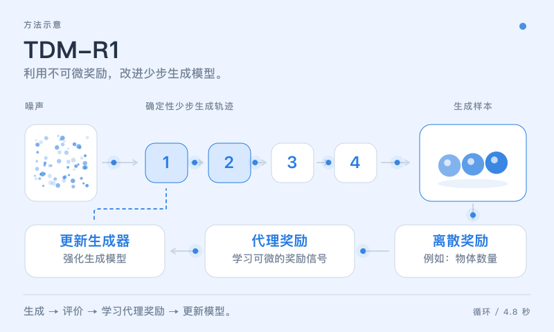
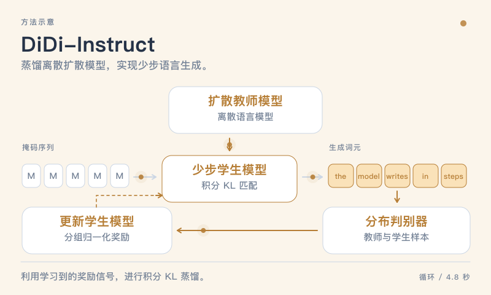
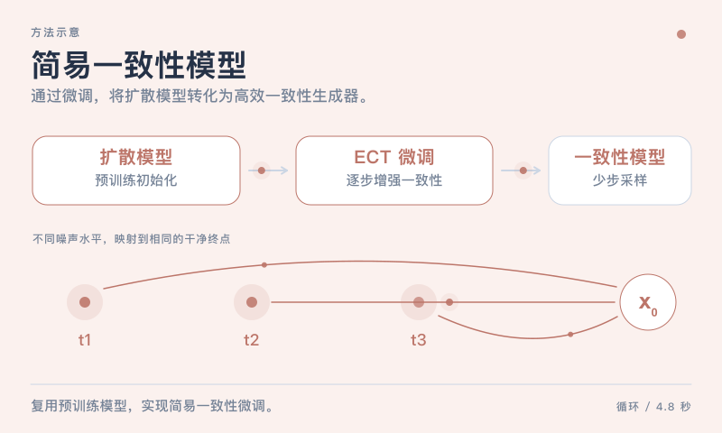
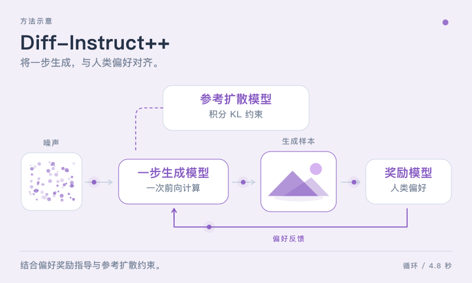
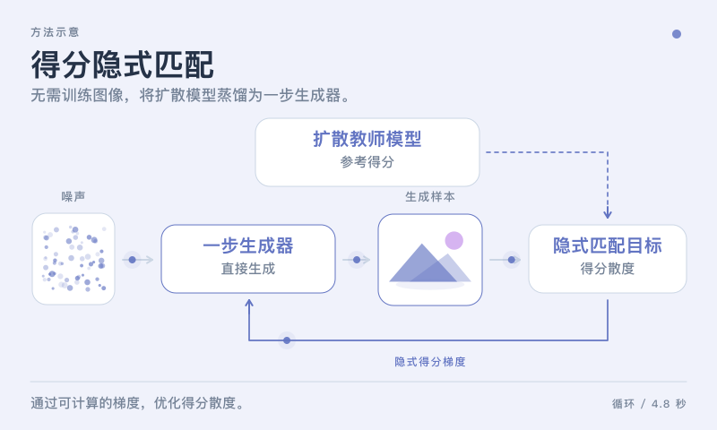
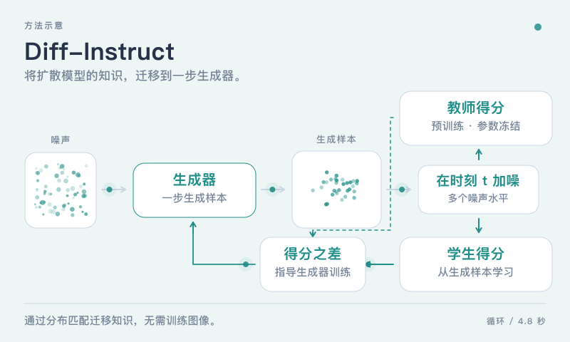
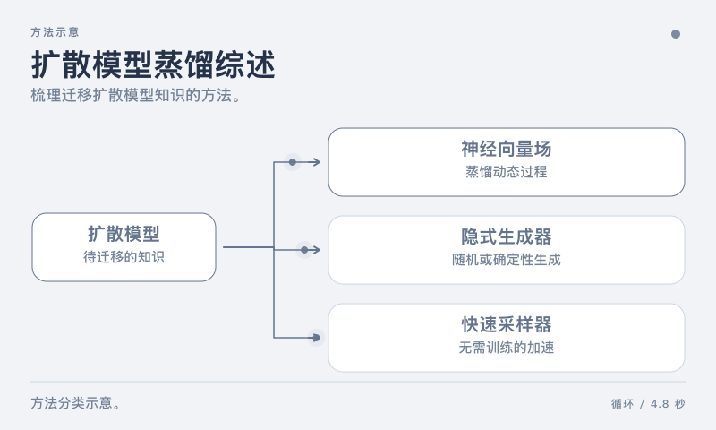

TDM-R1：利用不可微奖励强化少步扩散模型
ICML 2026
TDM-R1: Reinforcing Few-Step Diffusion Models with Non-Differentiable Reward
面向少步生成模型的强化学习。
学术研究 / 代表性论文
以一篇篇论文，探索生成式智能。
这里汇集了关于扩散、生成与对齐的部分研究成果。
18 篇论文

ICML 2026
TDM-R1: Reinforcing Few-Step Diffusion Models with Non-Differentiable Reward
面向少步生成模型的强化学习。

ICLR 2026
Ultra-Fast Language Generation via Discrete Diffusion Divergence Instruct
通过积分 KL 匹配，将离散扩散语言模型蒸馏为少步生成器。

ICLR 2025
Consistency Models Made Easy
通过简易一致性微调（ECT），将预训练扩散模型转化为高效的一致性生成模型。
ICML，2025
David and Goliath: Small One-step Model Beats Large Diffusion with Score Post-training
预印本，2025
Technical report of the dots.vlm1
NeurIPS，2025
Reward-Instruct: A Reward-Centric Approach to Fast Photo-Realistic Image Generation
IEEE Transactions on Pattern Analysis and Machine Intelligence (TPAMI)，2025
Self-Guidance: Boosting Flow and Diffusion Generation on Their Own
NeurIPS，2025
Uni-Instruct: One-step Diffusion Model through Unified Diffusion Divergence Instruction

Transactions on Machine Learning Research (TMLR)，2024
Diff-Instruct++: Training One-step Text-to-image Generator Model to Align with Human Preferences
让一步图像生成更好地对齐人类偏好。
预印本，2024
One-step Flow Matching Generators
CVPR，2024
Schedule On the Fly: Diffusion Time Prediction for Faster and Better Image Generation

NeurIPS，2024
One-Step Diffusion Distillation through Score Implicit Matching
通过隐式得分散度梯度，实现无需训练图像的一步扩散蒸馏。
ICML，2024
Variational Schrödinger Diffusion Models
通过自适应变分得分，实现高效扩散传输与无需轨迹模拟的得分训练。
NeurIPS，2023
Enhancing Adversarial Robustness via Score-based Optimization

NeurIPS，2023
Diff-instruct: A Universal Approach for Transferring Knowledge from Pre-trained Diffusion Models
将扩散模型的知识迁移到一步生成器。

arXiv 预印本，arXiv:2304.04262，2023
A Comprehensive Survey on Knowledge Distillation of Diffusion Models
系统梳理扩散蒸馏、隐式生成器与无需训练的加速采样方法。
NeurIPS，2023
Entropy-based Training Methods for Scalable Neural Implicit Samplers
NeurIPS，2023
SA-Solver: Stochastic Adams Solver for Fast Sampling of Diffusion Models
试试其他关键词，或选择不同的年份。
* 表示共同贡献或通讯作者。 探索研究方向 ›